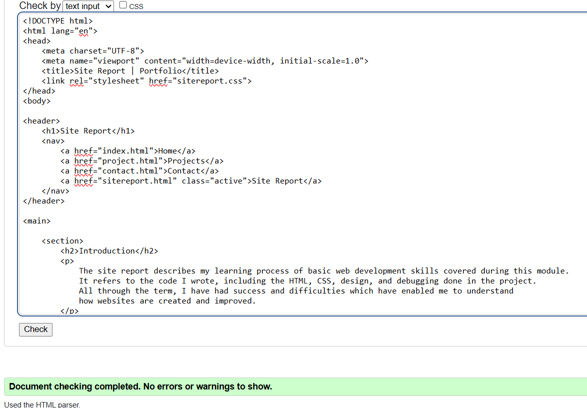
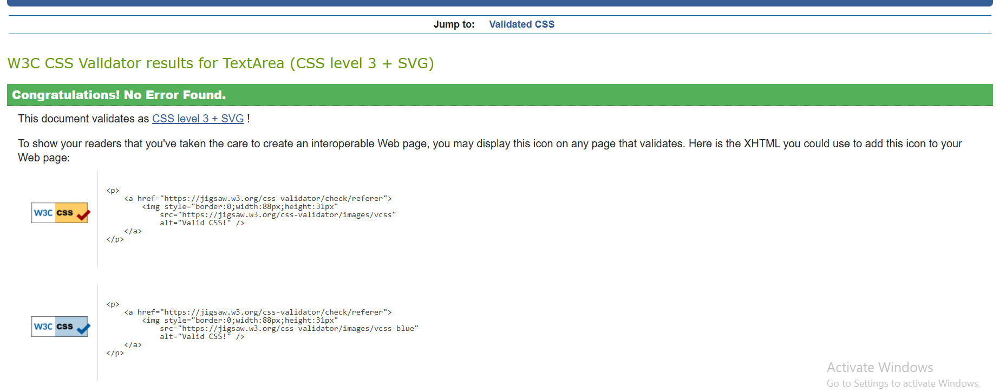

Introduction
The site report describes my learning process of basic web development skills covered during this module. It refers to the code I wrote, including the HTML, CSS, design, and debugging done in the project. All through the term, I have had success and difficulties which have enabled me to understand how websites are created and improved.
Learning Experience (Ups and Downs)
Learning HTML was easier at the beginning because it focuses on structure. Creating headings, paragraphs, navigation bars, and sections showed me the way a webpage would end and how everything is arranged. The CSS was more hard because a minor mistake could also mess up the whole structure.
Sometimes debugging can be frustrating when layout correction may involve missing semicolons in JavaScript code, incorrect selectors. Nonetheless, with the aid of browser developer tools and validators, it has been possible to identify errors functionality and how it can help me improve my code.
Development of the Site
Throughout the term, my website grew from a single page into a multi-page portfolio including Home, Projects, Contact, videodemo and this Site Report page.
Design Decisions and UI
I decided to focus on having a clean interface design to make the website more friendly for its users. A non-serif font was used for easy readability, and colours were kept calm and professional.
Validation Evidence
Below are screenshots showing that my HTML and CSS files validate successfully using W3C validation tools.
 Video Demonstration
Video DemonstrationConclusion
This module helped me gain a strong foundation in web development and increased my confidence in coding, design, and problem-solving skills.